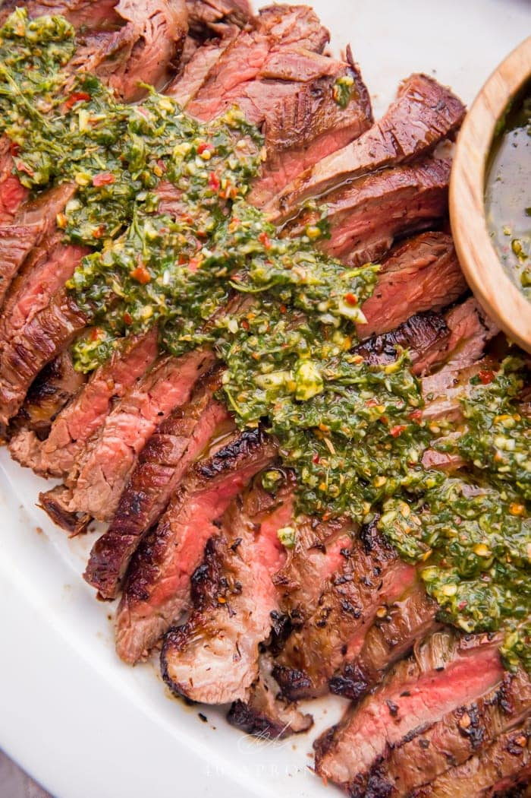

Steak and Chimichurri Sauce

Ingredients
- 1 1/2 - 2 Pounds Flank Steak
Chimichurri Sauce
- 2 tablespoons fresh garlic (peeled)
- 1/2 cup fresh parsley
- ¼ cup fresh cilantro
- 1 cup olive oil or avocado oil
- ¼ cup fresh lemon juice
- 1 tablespoon dried oregano
- 1 tablespoon crushed red pepper
- ½ tablespoon salt plus more to taste
Instructions
For the Chimichurri Sauce
- In a food processor, add the garlic. Pulse until minced. Add fresh parsley and cilantro and pulse until finely chopped. Add remaining chimichurri sauce ingredients and pulse until well combined. Set aside.
For the Steak
- Marinate the steak: If the steak is large, about 2 pounds, or too big to fit into your skillet, cut it down the middle now. Make sure to cut against the grain (See Tips section in post content for help). Place steaks in a large baking dish or plastic food storage bag and add ⅓ cup chimichurri. Turn to coat. Marinate for at least 30 minutes, preferably 1-2 hours.
- Sear the steaks: Heat a large cast iron skillet over medium-high heat for about 3 minutes. Remove steaks from chimichurri and scrape off excess marinade. Pat dry and sprinkle with a modest amount of salt.
- If working with two pieces of steak, pour 1 tablespoon of avocado oil into a cast-iron skillet and let heat about 30 seconds or until shimmering but not smoking. If working with steak in one piece, pour 2 tablespoons avocado oil in and heat.
- When the oil is shimmering, use a pair of long tongs and carefully place steaks in skillet. Cook 3-4 minutes on each side, depending on the thickness of the steak. See Notes for details.
- Remove steak from skillet and let rest on a cutting board for 5 minutes. Repeat with the second piece of steak, if steak had been cut in two. After resting, cut the steak into ½" slices against the grain. Arrange on a large serving platter and top with fresh chimichurri sauce. Serve with additional chimichurri.
Recipe Courtesy by Cheryl Malik